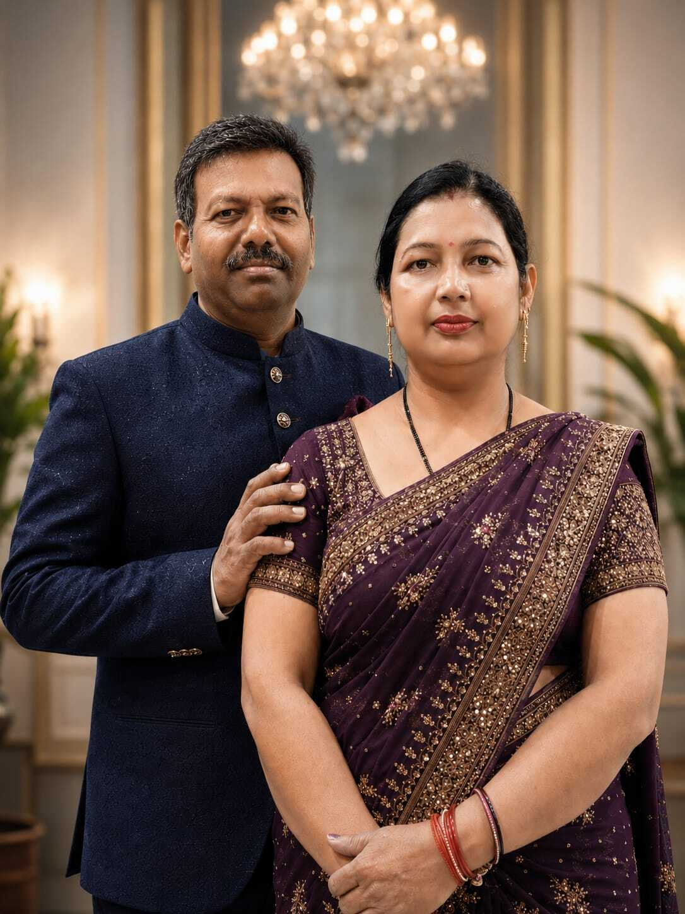
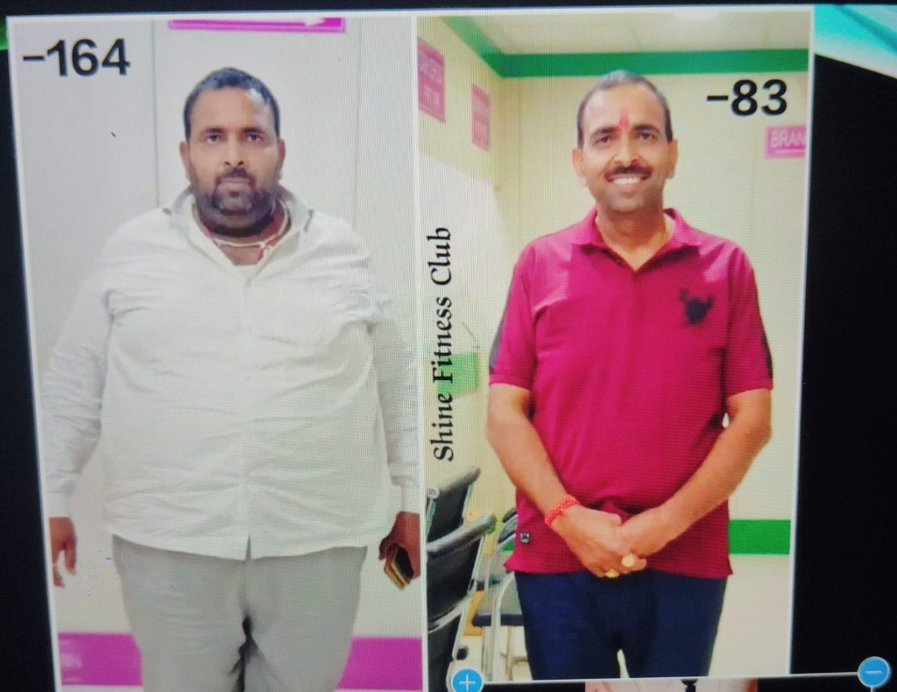

Bina Bhuke Aur Bina Hard Dieting Ke 10 Se 25 KG Weight Loss Kaise Kare? (Complete Guide)
Author: Best online weight loss coach India, Vinod Sharma (Founder - Shine Fitness Club weight loss)

1. Introduction: Natural Weight Loss Without Gym
Aaj kal log puchte hain, 10 kg weight loss in 1 month (10 किलो वजन 1 महीने में कैसे घटाएं)? Sach toh ye hai ki healthy lifestyle aur sahi portion control ke sath sab kuch possible hai. India me 95% log galat belly fat loss diet plan Indian follow karte hain. Weight loss ka matlab starvation (bhuka rehna) nahi hota.
Hamare online weight loss coaching India me hum aapko wahi lifestyle sikhate hain jisse aap life long fit reh sako.
2. Meri Real Story: Coach Vinod Sharma 25kg Weight Loss Transformation
Main jo bhi gyan aapko deta hu, wo Google se nahi, meri apni 110 kg se 85 kg tak aane ki real journey hai. Maine bina bhuke weight loss kaise kare (बिना भूखे वेट लॉस कैसे करें) ka asli secret discover kiya.
Watch: How I Lost 25 KG (Belly Fat Secrets)
3. Fat Loss Ka Science: Calorie Deficit & Metabolism
Agar aap soch rahe hain ki pet ki charbi kaise kam kare (पेट की चर्बी कैसे कम करें), toh iska ek hi science hai: Calorie Deficit. Sahi protein diet lene se aapka metabolism fast hota hai aur belly fat naturally melt hota hai.
Agar aap confuse hain ki aapko kitni calories chahiye, toh hamara free BMI calculator for Indian adults try karein aur apna exact BMI score check karein.

4. Bina Bhuke Weight Loss Karne Ke 5 Golden Rules
- Protein Diet: Har meal me protein zaroor add karein. Yeh muscle loss ko rokta hai.
- Portion Control: Khana chhodna nahi hai, bas apni body ki zarurat ke hisaab se khana hai.
- Hydration: Metabolism fast rakhne ke liye paani peena sabse bada pet kam karne ke upay hai.
- Check BMI Score: Apna progress track karne ke liye hamesha BMI Calculator India and Healthy Weight Chart ko follow karein.
- 1 to 1 Expert Guidance: Agar result nahi aa raha, toh kisi personal fitness coach online India se baat karein.

5. 10 kg Weight Loss in 3 Months: Is It Possible?
Han bilkul! Agar aap ek scientific Indian diet plan aur thoda sa daily movement add karein, toh "10 kg Weight Loss in 3 Months" ek realistic aur sustainable target hai. Best online weight loss coach India hamesha slow aur steady fat loss ko recommend karte hain jisse dobara weight na badhe.
6. Conclusion: Start Your Transformation Today!
Ab aapko pata chal gaya hai ki bina bhuke weight loss kaise kare. Aapki body ko ek healthy lifestyle ki zarurat hai. Agar aap direct mere sath kaam karna chahte hain toh 1 to 1 weight loss consultation online book karein.